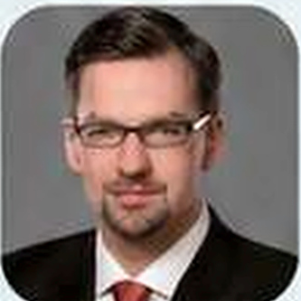

Dr. Wang Cheng
CEODr.-Ing. der Technischen Universität München (TUM). Experte für autonomes Fahren. Architekt von Audis Intelligent Driving System. Track Record in Produktion und Auslieferung von über 1 Mio. intelligenten Fahrzeugen.

Europäische Wissenschaftler für intelligente Systeme – mit Erfahrung aus Automobilindustrie, KI-Forschung und internationalem B2B-Geschäft.
FMC3 bringt moderne Robotiktechnologie vom Standort Ingolstadt in den europäischen Markt. Das Unternehmen wurde im Oktober 2025 von Prof. Dr. Björn Giesler, Dr. Wang Cheng und Dr. David Fan gegründet. Das Portfolio umfasst Reinigungs-, Begrüßungs- und Lieferroboter.
Wissenschaftliche Exzellenz, industrielle Erfahrung und ein internationales Netzwerk bilden die Grundlage für zuverlässige und skalierbare Lösungen im professionellen Einsatz.
Dr.-Ing. der Technischen Universität München (TUM). Experte für autonomes Fahren. Architekt von Audis Intelligent Driving System. Track Record in Produktion und Auslieferung von über 1 Mio. intelligenten Fahrzeugen.
PhD in Informatik am KIT; anerkannte Autorität in KI-Architektur. Über 50 Core-Patente zu Sensing und Datenverarbeitung. Führung von F&E-Teams mit mehr als 500 Mitgliedern.
Ehemaliger Präsident von Marelli China. Verantwortlich für Geschäftsbereiche mit über 1,5 Mrd. €. Post-Merger-Integrationen und Supply-Chain-Restrukturierungen.
Dr.-Ing. in Informatik vom KIT. Ehemaliger Scientist bei Siemens Labs und CTO von TerraIT. Über 15 Jahre Expertise in Datensimulation und Sim-to-Real-Domänen.

Mitgründer der SANEON GmbH. Über 16 Jahre B2B-Erfahrung mit OEMs und Tier-1-Automobilzulieferern. Markterschließung in Europa, Asien und den USA.